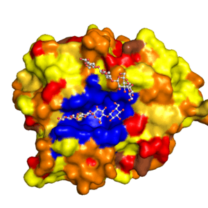
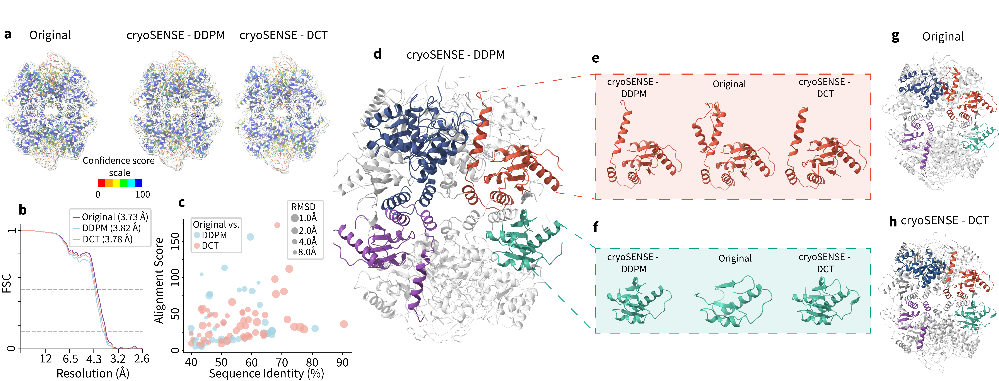

3D Volume Reconstruction

Reconstructed Atomic Model


Abstract
Cryo-electron microscopy (cryo-EM) enables the atomic-resolution visualization of biomolecules; however, modern direct detectors generate data volumes that far exceed the available storage and transfer bandwidth, thereby constraining practical throughput. We introduce cryoSENSE, the computational realization of a hardware-software co-designed framework for compressive cryo-EM sensing and acquisition. We show that cryo-EM images of proteins lie on low-dimensional manifolds that can be independently represented using sparse priors in predefined bases and generative priors captured by a denoising diffusion model. cryoSENSE leverages these low-dimensional manifolds to enable faithful image reconstruction from spatial and Fourier-domain undersampled measurements while preserving downstream structural resolution. In experiments, cryoSENSE increases acquisition throughput by up to 2.5× while retaining the original 3D resolution, offering controllable trade-offs between the number of masked measurements and the level of downsampling.
High Throughput
Achieves up to 2.5× compression factor while preserving 3D structural resolution at near-atomic detail.
Dual Prior Framework
Combines handcrafted sparsity priors (DCT, wavelets, TV) with learned generative diffusion priors for robust reconstruction.
Flexible Acquisition
Supports both pixel-space masking (coded apertures) and Fourier-space masking (phase plates) strategies.
Biological Fidelity
Preserves conformational heterogeneity (80-88% cluster agreement) and enables accurate atomic model building.